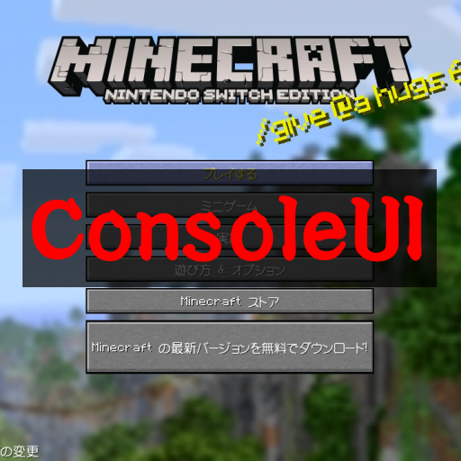
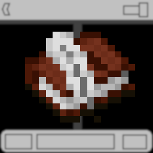

マイクラ統合版 アドオン一覧
githubで配布してるものもあるよ。


Hack Item Giver
Hackなどを使わずに通常では出せないアイテムやブロックを出せるようにするアドオンです!
Hackなどを使わずに通常では出せないアイテムやブロックを出せるようにするアドオンです!

Custom UI Maker
本と羽根ペンを使って内容を自由に入力して表示できるUIを作ることができます!
本と羽根ペンを使って内容を自由に入力して表示できるUIを作ることができます!

Legacy GameConsoleUI
コンソールエディション(WiiU, 旧Switch, PS3, 旧PS4, Xbox360, 旧Xbox One)のようなUIにするリソースパックです!
DL数:
コンソールエディション(WiiU, 旧Switch, PS3, 旧PS4, Xbox360, 旧Xbox One)のようなUIにするリソースパックです!
DL数:

ほかにもいろんなアドオンをGithubのリポジトリに配布しています！